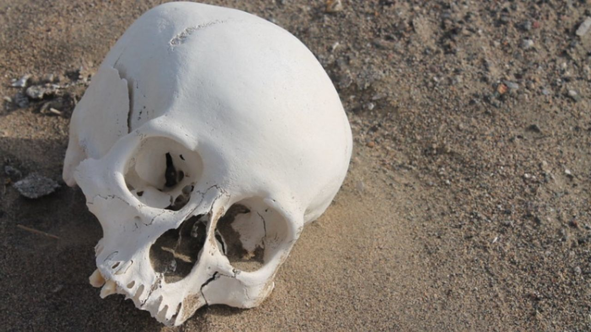
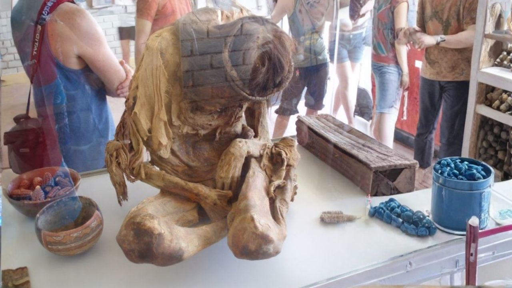
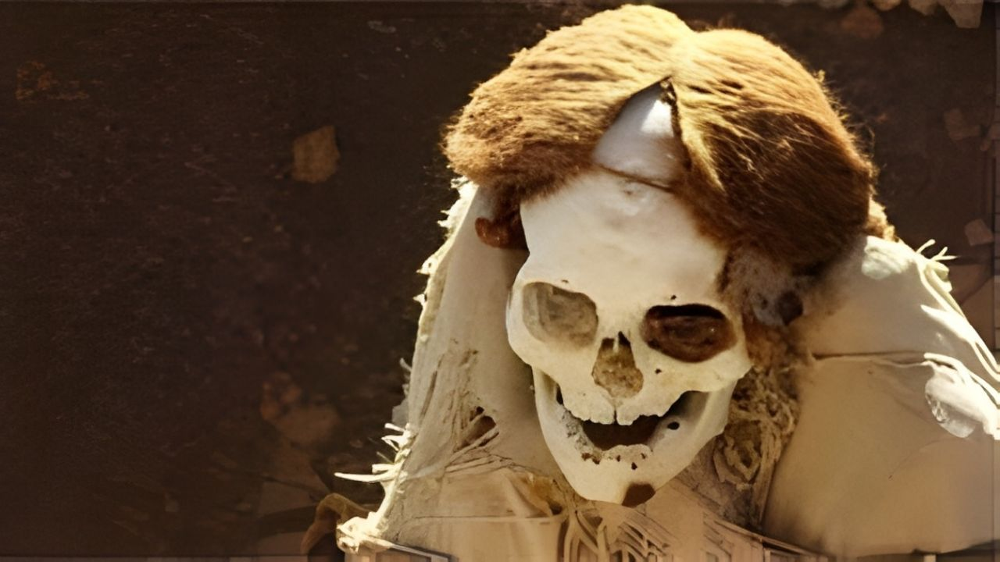

Cementerio de Chauchilla



Momias prehispánicas y artefactos antiguos de gran importancia arqueológica se pueden encontrar justo a las afueras de la ciudad de Nazca.
Descubre antiguas momias Nazca conservadas durante siglos en Chauchilla.
Detalle
El Cementerio de Chauchilla fue descubierto en la década de 1920, aunque no se ha utilizado desde el siglo IX. Este antiguo sitio de entierro data de entre 600 y 700 años, comenzando alrededor del 200 d.C., y proporciona una visión significativa de la cultura Nazca. Gracias al clima extremadamente seco y a las prácticas funerarias Nazca, las momias están notablemente bien conservadas, y muchas todavía conservan su cabello y piel. Chauchilla ofrece una visión fascinante de las costumbres antiguas, lo que lo convierte en un destino muy recomendado para aquellos interesados en la arqueología y la historia.
Incluye:
- Tarifas de entrada
- Recojo en el hotel en Nazca
- Transporte
- Guía local
- Regreso al hotel al final del tour
- Guía de habla inglesa/hispana.
No Incluye:
- Extras y propinas.
- Alojamiento
Precio:
25$
Reservar Ahora